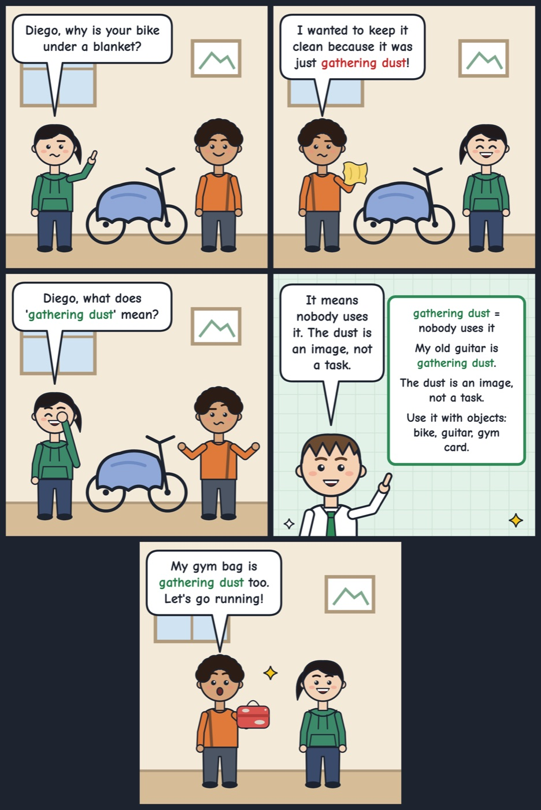

gathering dust
If something is gathering dust, nobody uses it any more.
My old guitar has been gathering dust in the closet for years.
Tip: Use it with 'be' or 'sit' + 'gathering dust' (is/has been gathering dust) for things like gadgets, equipment or ideas that are no longer used; it's usually a little critical or regretful.
Hear it in conversation
Workbook
1. What does it mean?
In this conversation, what does "gathering dust" mean?
2. Fill the gap
I signed up for three online courses last year, but they're all just on my laptop now.
3. Choose the best reply
Kofi: Did you ever finish decorating the study with all those shelves you bought?
4. Your turn: speak
Is there something you bought that you hardly ever use? Tell me about it.
Show an example answer
I bought a bread machine a couple of years ago because I wanted to bake at home. It's been gathering dust in the kitchen cupboard ever since, because it's easier to buy bread from the shop on my way home from work.
Answer key: gathering dust
- 1. A. Nobody is using it any more
- 2. gathering dust
- 3. B. Not yet. Most of the boxes are still in the hall, gathering dust.
- 4. Example: I bought a bread machine a couple of years ago because I wanted to bake at home. It's been gathering dust in the kitchen cupboard ever since, because it's easier to buy bread from the shop on my way home from work.
See it in a comic
